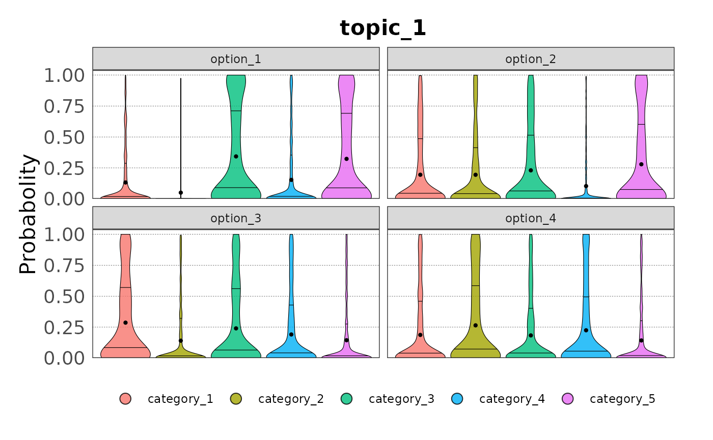

library(elicitr)
#> Error in get(paste0(generic, ".", class), envir = get_method_env()) :
#> object 'type_sum.accel' not foundMany of the concepts introduced in
vignette("continuous_variables") are also applicable to
categorical variables, and the name of the functions are the same but
have the prefix cat instead of cont. However,
there are some differences in the workflow for loading and analysing
data collected during the elicitation of categorical variables. This
vignette will guide you through the process of loading and analysing
categorical data.
Datasets
There are three datasets included in the package for demonstration
purposes: ?topic_1, ?topic_2, and
?topic_3:
topic_1
#> # A tibble: 120 × 5
#> name category option confidence estimate
#> <chr> <chr> <chr> <dbl> <dbl>
#> 1 Derek Maclellan category_1 option_1 15 0.08
#> 2 Derek Maclellan category_2 option_1 15 0
#> 3 Derek Maclellan category_3 option_1 15 0.85
#> 4 Derek Maclellan category_4 option_1 15 0.02
#> 5 Derek Maclellan category_5 option_1 15 0.05
#> 6 Derek Maclellan category_1 option_2 35 0.02
#> 7 Derek Maclellan category_2 option_2 35 0.11
#> 8 Derek Maclellan category_3 option_2 35 0.18
#> 9 Derek Maclellan category_4 option_2 35 0.02
#> 10 Derek Maclellan category_5 option_2 35 0.67
#> # ℹ 110 more rows
topic_2
#> # A tibble: 100 × 5
#> name category option confidence estimate
#> <chr> <chr> <chr> <dbl> <dbl>
#> 1 Christopher Felix category_1 option_1 100 0.09
#> 2 Christopher Felix category_2 option_1 100 0.21
#> 3 Christopher Felix category_3 option_1 100 0.11
#> 4 Christopher Felix category_4 option_1 100 0.59
#> 5 Christopher Felix category_5 option_1 100 0
#> 6 Christopher Felix category_1 option_2 20 0.09
#> 7 Christopher Felix category_2 option_2 20 0.05
#> 8 Christopher Felix category_3 option_2 20 0.33
#> 9 Christopher Felix category_4 option_2 20 0.24
#> 10 Christopher Felix category_5 option_2 20 0.29
#> # ℹ 90 more rows
topic_3
#> # A tibble: 90 × 5
#> name category option confidence estimate
#> <chr> <chr> <chr> <dbl> <dbl>
#> 1 Derek Maclellan category_1 option_1 80 0.02
#> 2 Derek Maclellan category_2 option_1 80 0.02
#> 3 Derek Maclellan category_3 option_1 80 0.01
#> 4 Derek Maclellan category_4 option_1 80 0.87
#> 5 Derek Maclellan category_5 option_1 80 0.08
#> 6 Derek Maclellan category_1 option_2 50 0.11
#> 7 Derek Maclellan category_2 option_2 50 0.09
#> 8 Derek Maclellan category_3 option_2 50 0.17
#> 9 Derek Maclellan category_4 option_2 50 0.09
#> 10 Derek Maclellan category_5 option_2 50 0.54
#> # ℹ 80 more rowsIn each dataset the first column contains the name of the expert and the second the categories of the categorical variable. Each category can have different options, saved in column three. The fourth column contains the expert’s confidence, and the fifth the expert’s estimate.
Load data
We start by creating the ?elic_cat object with the
function cat_start(). As for the continuous variables, this
objects stores the metadata of the elicitation process:
my_categories <- c("category_1", "category_2", "category_3",
"category_4", "category_5")
my_options <- c("option_1", "option_2", "option_3", "option_4")
my_topics <- c("topic_1", "topic_2", "topic_3")
my_elicitation <- cat_start(categories = my_categories,
options = my_options,
experts = 6,
topics = my_topics)
#> ✔ <elic_cat> object for "Elicitation" correctly initialised
my_elicitation
#>
#> ── Elicitation ──
#>
#> • Categories: "category_1", "category_2", "category_3", "category_4", and
#> "category_5"
#> • Options: "option_1", "option_2", "option_3", and "option_4"
#> • Number of experts: 6
#> • Topics: "topic_1", "topic_2", and "topic_3"
#> • Data available for 0 topicsThis elicitation process is for a categorical variables with 5 categories estimated for four options and three topics by six experts.
Similarly as we did for continuous variables, we can load the data
with the function cat_load():
my_elicitation <- cat_add_data(my_elicitation,
data_source = topic_1,
topic = "topic_1") |>
cat_add_data(data_source = topic_2, topic = "topic_2") |>
cat_add_data(data_source = topic_3, topic = "topic_3")
#> ✔ Data added to Topic "topic_1" from "data.frame"
#> ✔ Data added to Topic "topic_2" from "data.frame"
#> ✔ Data added to Topic "topic_3" from "data.frame"Again, metadata are used to validate the data. If the data is not consistent with the metadata, an error message will be displayed. For example, if we try to load data with a category not defined in the metadata:
malformed_data <- topic_1
malformed_data[1, 2] <- "category_6"
cat_add_data(my_elicitation,
data_source = malformed_data,
topic = "topic_1")
#> Error in `cat_add_data()`:
#> ! The column with the name of the categories contains unexpected values:
#> ✖ The value "category_6" is not valid.
#> ℹ Check the metadata in the <elic_cat> object.Get data
Data can be retrieved from the elic_cat object with the
cat_get_data() function:
cat_get_data(my_elicitation, topic = "topic_1")
#> # A tibble: 120 × 5
#> id category option confidence estimate
#> <chr> <chr> <chr> <dbl> <dbl>
#> 1 5ac97e0 category_1 option_1 15 0.08
#> 2 5ac97e0 category_2 option_1 15 0
#> 3 5ac97e0 category_3 option_1 15 0.85
#> 4 5ac97e0 category_4 option_1 15 0.02
#> 5 5ac97e0 category_5 option_1 15 0.05
#> 6 5ac97e0 category_1 option_2 35 0.02
#> 7 5ac97e0 category_2 option_2 35 0.11
#> 8 5ac97e0 category_3 option_2 35 0.18
#> 9 5ac97e0 category_4 option_2 35 0.02
#> 10 5ac97e0 category_5 option_2 35 0.67
#> # ℹ 110 more rowsNotice that the name of the expert has been anonymised and assigned
to the column id. Data can be retrieved only for given
options:
cat_get_data(my_elicitation, topic = "topic_2", option = "option_1")
#> # A tibble: 25 × 5
#> id category option confidence estimate
#> <chr> <chr> <chr> <dbl> <dbl>
#> 1 e51202e category_1 option_1 100 0.09
#> 2 e51202e category_2 option_1 100 0.21
#> 3 e51202e category_3 option_1 100 0.11
#> 4 e51202e category_4 option_1 100 0.59
#> 5 e51202e category_5 option_1 100 0
#> 6 e78cbf4 category_1 option_1 75 0.31
#> 7 e78cbf4 category_2 option_1 75 0.27
#> 8 e78cbf4 category_3 option_1 75 0.09
#> 9 e78cbf4 category_4 option_1 75 0.17
#> 10 e78cbf4 category_5 option_1 75 0.16
#> # ℹ 15 more rowsData analysis
Contrary to continuous variables, there is not yet a function for plotting the raw data. However, we can plot the distribution of the sampled data.
Sample data
Data can be sampled using the function cat_sample() (see
the variable documentation for the explanation of the sampling methods).
Here we sample 100 values for each option:
samp <- cat_sample_data(my_elicitation,
method = "basic",
topic = "topic_1",
n_votes = 100)
#> ✔ Data sampled successfully using "basic" method.
samp
#> # A tibble: 2,400 × 7
#> id option category_1 category_2 category_3 category_4 category_5
#> <chr> <chr> <dbl> <dbl> <dbl> <dbl> <dbl>
#> 1 5ac97e0 option_1 4.13e-14 0 0.996 5.48e-107 3.79e- 3
#> 2 5ac97e0 option_1 9.12e- 1 0 0.0881 8.28e- 20 6.40e- 8
#> 3 5ac97e0 option_1 4.57e- 4 0 1.00 6.44e- 15 8.17e-14
#> 4 5ac97e0 option_1 6.03e- 2 0 0.940 3.20e- 5 1.45e- 9
#> 5 5ac97e0 option_1 9.50e- 3 0 0.988 1.73e- 3 3.37e- 4
#> 6 5ac97e0 option_1 3.31e- 3 0 0.997 6.76e- 18 1.95e-31
#> 7 5ac97e0 option_1 4.81e- 6 0 1.00 1.28e- 14 2.11e-12
#> 8 5ac97e0 option_1 1.73e- 4 0 0.998 9.17e- 15 2.22e- 3
#> 9 5ac97e0 option_1 1.15e-19 0 1.00 5.78e- 15 4.62e- 6
#> 10 5ac97e0 option_1 2.59e- 6 0 1.00 1.36e- 30 1.20e- 8
#> # ℹ 2,390 more rowsSampled data can be summarised for any option:
summary(samp, option = "option_1")
#> # A tibble: 5 × 7
#> Category Min Q1 Median Mean Q3 Max
#> <chr> <dbl> <dbl> <dbl> <dbl> <dbl> <dbl>
#> 1 category_1 7.88e- 29 1.63e- 5 7.04e- 3 0.132 0.142 0.999
#> 2 category_2 0 1.25e-73 4.31e-18 0.0498 0.000236 0.974
#> 3 category_3 2.44e- 21 2.65e- 3 1.35e- 1 0.343 0.701 1.00
#> 4 category_4 2.69e-234 1.44e-22 4.07e- 4 0.153 0.167 0.999
#> 5 category_5 3.74e- 49 5.44e- 4 1.21e- 1 0.323 0.650 1.00And plotted as violin plot:
plot(samp)